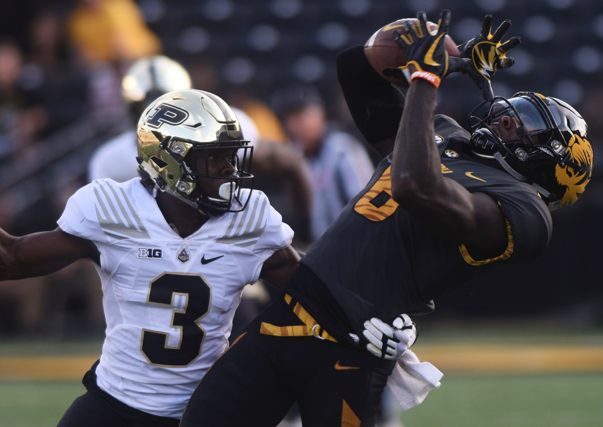
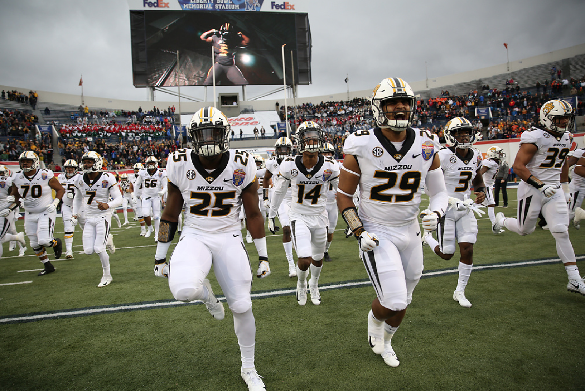
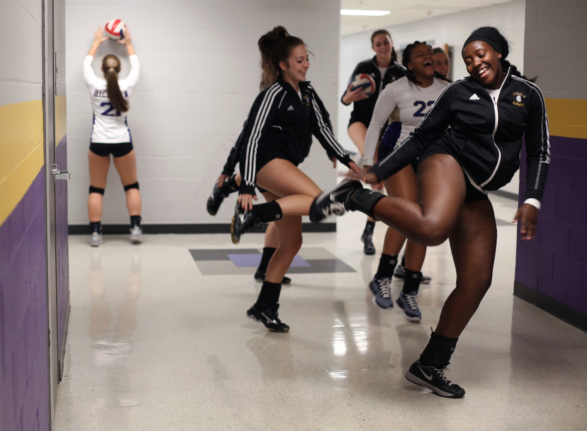
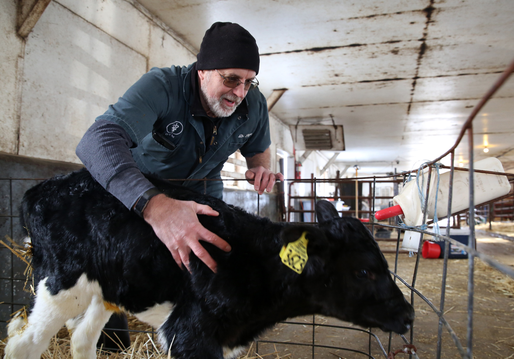
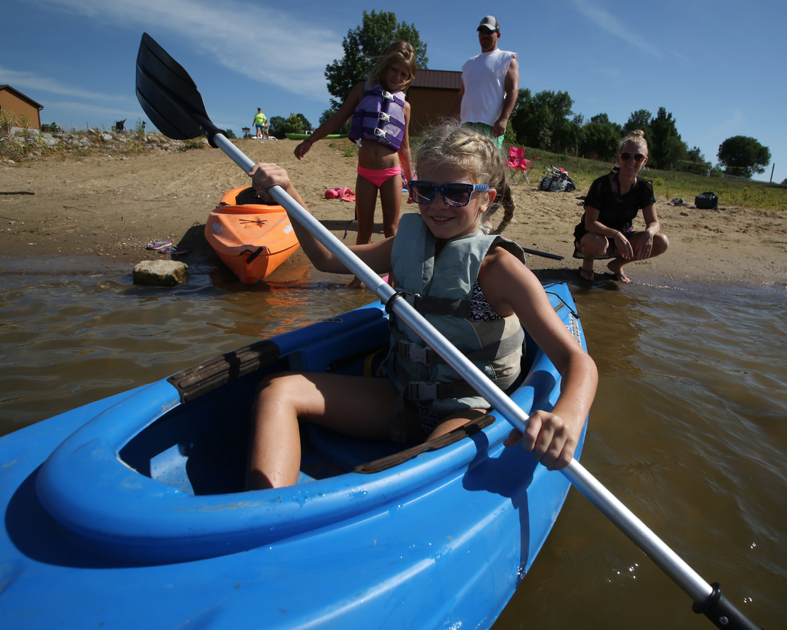
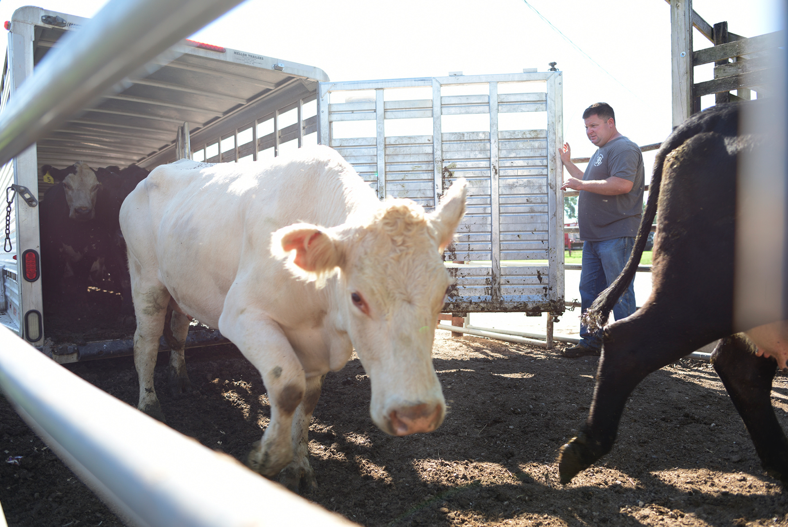
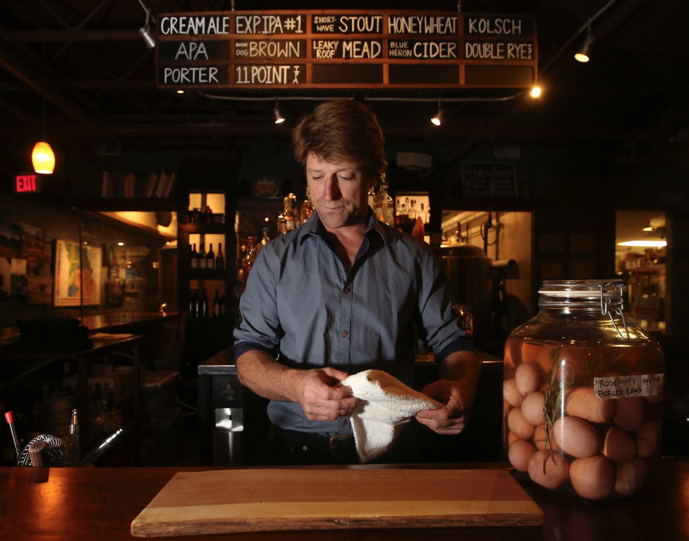
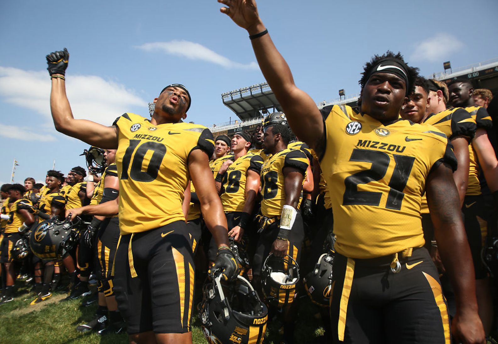

Trooper, a four year old black gelding, has been trained both in and outside of the show arena, working both as a working cattle and hunting horse, and as an all-around show and fair queen horse.
Hickman High School senior defender Adrian Arce, 16, leaves the field in disappointment, while head coach Wil Ross comforts senior captain and defender Samuel Muchow, 6, after the loss against Smith-Cotton on Monday, Oct. 23, at Hickman. Hickman lost the game 2-6 in the first game of the District 11 tournament, ending its 2017 season.
Missouri wide receiver J'Mon Moore catches a pass at Faurot Field in Memorial Stadium on Saturday, September 16, 2017. Moore caught only three passes for a total of 61 yards during the home game facing Purdue. Missouri lost 35-3.
Missouri linebacker Jamal Brooks, 25, and defensive lineman Nate Anderson, 29, yell as they take the field with the Tigers on Dec. 31, 2018 at the 60th AutoZone Liberty Bowl in Liberty Bowl Memorial Stadium in Memphis, Tn.
Eryka Wanyonyi and the Hickman varsity volleyball team warm up with a line-dance in the high school’s hallway before the game Monday, September 11, 2017 in Columbia.
Dr. Scott Poock checks on a calf that hadn't yet finished its bottle of milk. The calves are pulled from their moms shortly after birth and once it is clear they can have figured out how to suck on the bottle and can handle a full bottle of milk, they are moved to individual hutches. Poock is a vet and researcher at Foremost Research Farm, the research dairy farm for the University of Missouri.
Kharigan Fuemmeler, 10, pushes off the beach to chase down the kayaks carrying her siblings and friends at Long Branch Lake on June 24, 2018 in Macon, Missouri. The two families joined together for a Sunday afternoon at the lake including kayaking and swimming.
Steve Vahle takes a minute alone to “escape reality” on Wednesday on the railroad tracks crossing College Avenue. Vahle has been in and out of homelessness for nearly 30 years in the Columbia area. Vahle has lost two friends in last few years, one in April, and now is challenged by the high expense of living alone in Columbia. “I have some money saved up and I am getting my responsibilities back together,” Vahle said.
Tabitha Miner, a fine arts student at Ohio’s Tiffin University studying dance and vocal performance, poses between the columns of the Denver Public Library.
Musician Ruth Acuff poses for a portrait in one of her most commonly worn harp costumes. Acuff performed with three different musical groups when living in Columbia, including a harp trio she plays in, a psychedelic rock band she sang lead for called The Royal Furs, and a backup singer for Pink Floyd cover band Interstellar Overdrive. Acuff moved to New York City in January 2019 but still returns to Columbia occasionally to perform with the groups.
Eric Jones helps unload the final of four trailer-loads of cattle, totaling at 50 calves and around 40 cows Thursday morning to be sold in the regular cattle and special cow sales happening a few days later, on Saturday, Sept. 15, 2018 at the auction house in Marshall, Mo. Hosting a cattle auction every Saturday, with special auctions every other week, the stock pens are constantly in flux between different groups of cattle. After working with the same local producers for years, the auction will oftentimes help producers trailer in cattle in the days prior to a sale. The Sept. 15 auction was expected to be a big one leading to the early arrival of cattle. The prior weeks auction moved close to 150 head - small compared to the nearly 1400 head that had run through the week before that.
Rusty Lee, an east central regional extension agronomist, , adjusts the amount of anhydrous ammonia being released from the tank on Monday, July 30, 2018 near Bellflower, Missouri. Lee led the demonstration on ammoniating hay, a process typically applied during dry years that yield lower quality hay or straw. The ammonia is absorbed by the bales in gas form and ultimately offers higher protein levels and easier digestibility.
Summer Allen ducks under a fallen branch along the MKT Nature and Fitness Trail on Jan. 12 in Columbia during a storm that dumped more than 16 inches of snow on the city. January 2019 turned out to be the fifth-snowiest January on record in Columbia.
Levi Bedall, one of the three Rhode Island designers with Pneuhaus design collective for the art installation Atmosphere, stands silently between light beams on Friday, March 2, 2018 in Columbia, Missouri. “I feel like I’m in a space. That these things are real. That they are solid,” said Bedall. “When I move my hand in front of one of them I expect to feel something when I hit it. But I don’t.” The installation was specially designed to match the 2018 True/False Film Fest's theme "Whether|Weather."
Broadway Brewery co-owner Walker Claridge was part of the founding group that created the Brewery in 2009. Eight years, later, Claridge continues to work in the restaurant and brewery which as of October 2017 showcased 24 beers per year. Ingredients stocked at the bar to compliment drinks include a variety of fruits like oranges and limes as well as other ingredients like rosemary pickled eggs.
Jefferson City Jay’s junior Kade Franks begins his wind up before striking out a batter from Hickman High School during the junior varsity match on Monday April 11, 2016. The team continued on to win the game 5-3 over Hickman to make an overall record of 3-4.
Missouri tight end Jason Reese and running back Ish Witter join the student section in singing the MU alma mater after Missouri's 72-43 win over Missouri State University on Sep. 2, 2017 for the first game of the season. The combined 115 points set a new record for the most ever scored in a Missouri football game.